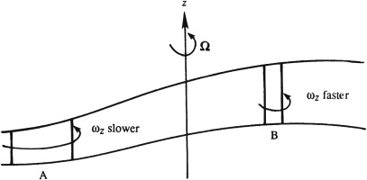

To understand the vortex-stretching term, consider the natural coordinate system where \(s\) is the arc length along a vortex line, \(n\) points away from the center of vortex-line curvature, and \(m\) lies along the second normal to \(s\). The vortex stretching term becomes: \[ (\boldsymbol{\omega} \cdot \nabla) \mathbf{u} = \left[ \boldsymbol{\omega} \cdot \left( \mathbf{e}_s \frac{\partial}{\partial s} + \mathbf{e}_n \frac{\partial}{\partial n} + \mathbf{e}_m \frac{\partial}{\partial m} \right) \right] \mathbf{u} = \omega \frac{\partial \mathbf{u}}{\partial s} \]
By definition, \(\boldsymbol{\omega} \cdot \mathbf{e}_n = \boldsymbol{\omega} \cdot \mathbf{e}_m = 0\), and \(\boldsymbol{\omega} \cdot \mathbf{e}_s = \omega = |\boldsymbol{\omega}|\) \(\partial u_s/\partial s\) represents the increase of \(u_s\) along the vortex line s, that is, the stretching of a vortex line \(\partial u_n/\partial s\) and \(\partial u_m/\partial s\) represent the change of the normal velocity components along \(s\), therefore the rate of turning or tilting of vortex lines about the \(m\) and \(n\) axes.
To better understand how rotation of the frame of reference influences vorticity, consider \(\boldsymbol{\Omega} = \Omega \mathbf{e}_z\) so that \(2(\boldsymbol{\Omega} \cdot \nabla) \mathbf{u} = 2\Omega(\partial u/\partial z)\): \[\frac{D \omega_x}{D t} = 2\Omega \frac{\partial u_x}{\partial z}, \quad \frac{D \omega_y}{D t} = 2\Omega \frac{\partial u_y}{\partial z}, \quad \text{and} \quad \frac{D \omega_z}{D t} = 2\Omega \frac{\partial u_z}{\partial z}\]
Stretching of fluid lines in the \(z\) direction increases \(\omega_z\), whereas a tilting of vertical lines changes the relative vorticity along the \(x\) and \(y\) directions. Merely stretching or turning of vertical material lines is required for this mechanism to operate, in contrast to \((\boldsymbol{\omega} \cdot \nabla) \mathbf{u}\) where a stretching or turning of vortex lines is needed. Because vertical material lines contain the planetary vorticity \(2\Omega e_z\). Thus, a vertically stretching fluid column tends to acquire positive \(\omega_z\), and a vertically shrinking fluid column tends to acquire negative \(\omega_z\)
◀ ▶